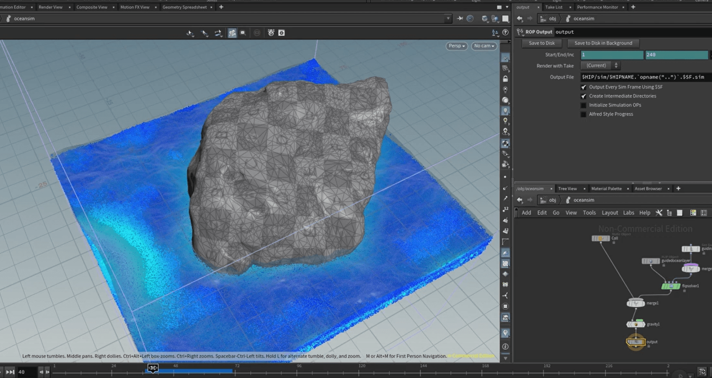

Je suis passionné de cinéma, musique et de l'art vidéo-ludique. Que ce soit de la 3D, tant à la modélisation qu'à l'animation, du montage, de la composition de musique ou encore de l'informatique, je touche à tout.
Je suis actuellement à la recherche d'un stage en VFX, animation, jeux-vidéo ou autre domaine audiovisuel. Je suis mobile dans toute la France métropolitaine.
Générique entièrement en 3D sur Blender et After Effects. Le concept a été trouvé en collaboration avec la réalisatrice.
J'ai modélisé, texturé et animé sur Blender et exporté en .exr sur After Effects pour incruster le texte.
Des oeuvres étaient placés dans la salle, et une tablette android permettait de donner vie à ces oeuvres.
J'ai ensuite traité cette acquisition puis appliqué à un squelette.
J'ai coordonné une équipe de 7 personnes pour la création du script, de la voix-off et de la recherche. J'ai ensuite rassemblé ce travail et j'ai monté la vidéo.
J'ai effectué le montage et les effets spéciaux.
- Travail avec l'équipe de réalisation pour la diffusion d'un journal télévisé journalier
- Création de divers images d'illustrations diffusées en direct
- Mise en place avec l'équipe de production d'un concours d'éloquence en direct
- Prise d'initiative pour la création d'un programme d'automatisation d'un agenda journalier
- Création d'une publicité pour le magasin en accord avec un cahier des charges
- Montage de 3 spectacles de danse de la ville d'Arras
- Responsable VFX et générique pour deux court-métrage avec la même équipe. Réalisation de génériques entièrement en 3D
- Création d'un monstre humanoïde en 3D, incrusté dans une vidéo immérsive 360°
- Acquisition, traitement et implémention de motion capture dans une courte vidéo
- Réalisation d'un montage et mixage son d'un court-métrage d'animation en équipe
- Création d'une scène 3D photoréaliste
- Recreation en 3D d'un lieu grâce au caméra mapping
- Mise en place d'un musée en réalité augmenté. Programmation en java pour android.
- Rrésponsable du montage d'un court-métrage de troisième année.
- Montage et effets spéciaux d'un court-métrage pour un concourt.
 Premier Pro
Premier Pro Davinci Resolve
Davinci Resolve Media Composer
Media Composer Final Cut
Final Cut
 Blender
Blender  Maya
Maya Houdini
 3DS max
3DS max Substance Painter
Substance Painter Nuke
Nuke After Effects
After Effects Photoshop
Photoshop
 ProTools
ProTools
 Python
Python C++
C++ C
C HTML/CSS/Javascript
HTML/CSS/Javascript LUA
LUA Java
Java Libre Office
Libre Office Open Office
Open Office Microsoft Office
Microsoft Office